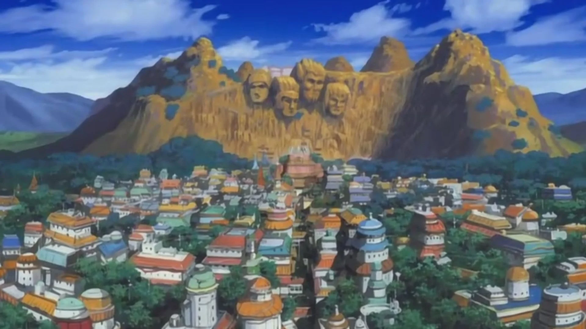
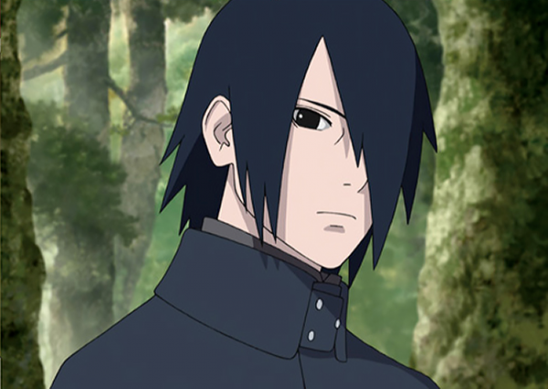
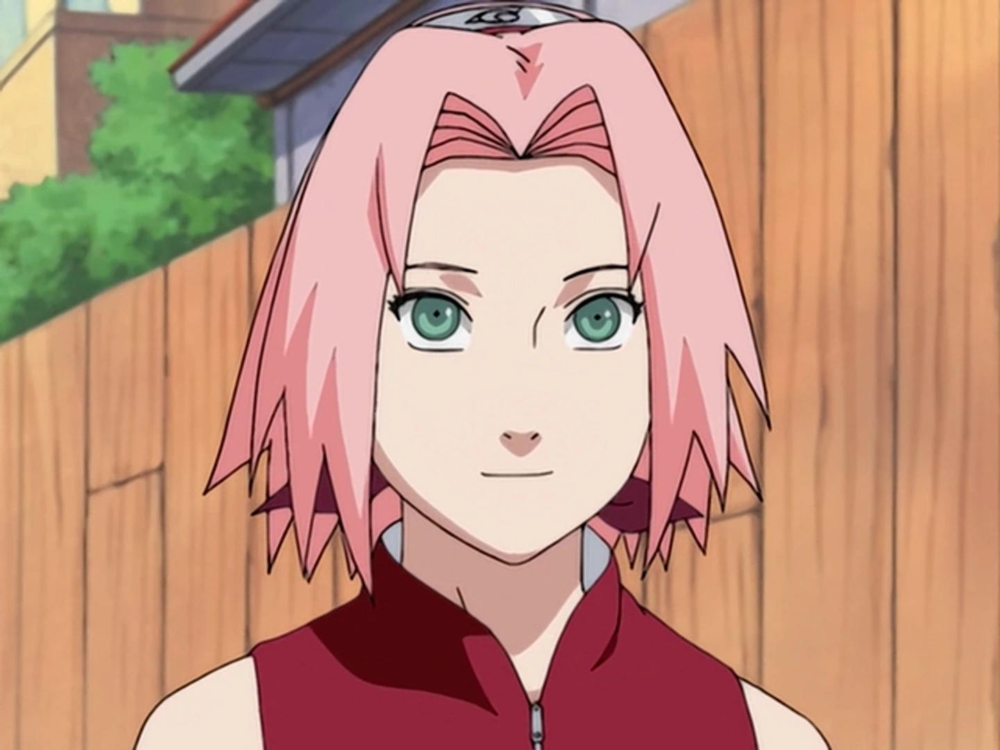
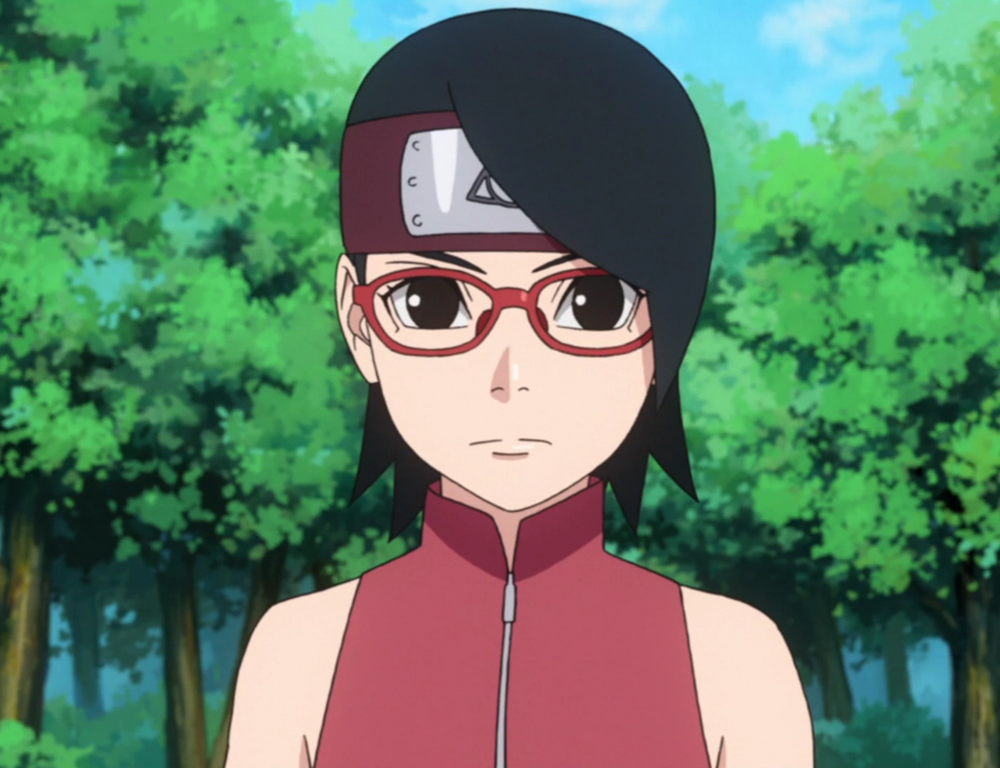
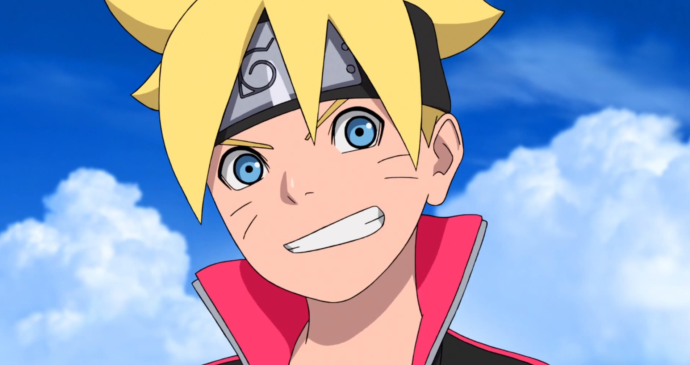
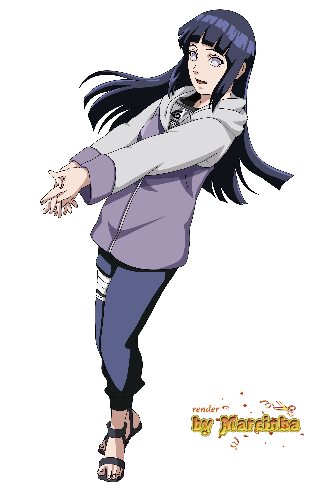
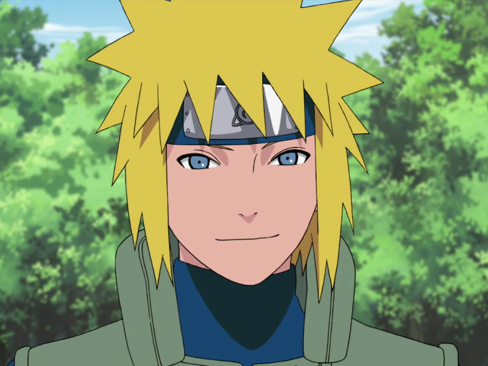
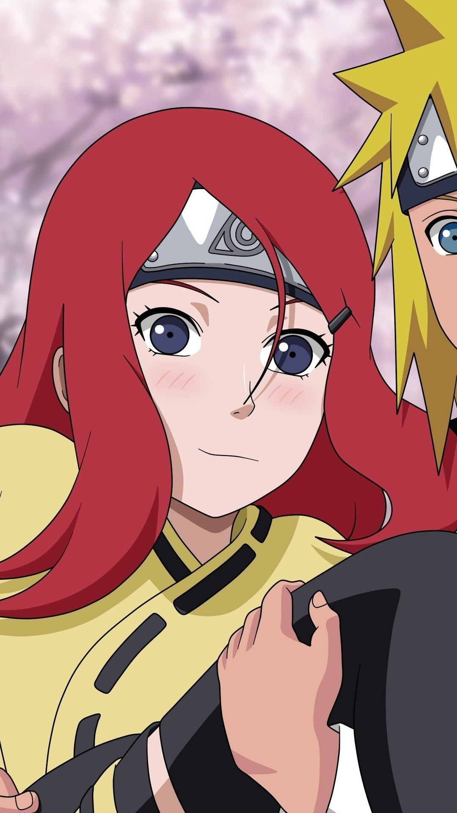

Negara
Konoha
Uzumaki Naruto
naruto (ナルト) adalah sebuah serial manga karya Masashi Kishimoto yang diadaptasi menjadi serial anime. Manga Naruto bercerita seputar kehidupan tokoh utamanya, Naruto Uzumaki, seorang ninja yang hiperaktif, periang, dan ambisius yang ingin mewujudkan keinginannya untuk mendapatkan gelar Hokage, pemimpin dan ninja terkuat di desanya. Serial ini didasarkan pada komik one-shot oleh Kishimoto yang diterbitkan dalam edisi Akamaru Jump pada Agustus 1997.[1]
ANIMASI KIRI
Sasuke
ANIMASI KANAN
Sakura
ANIMASI ZOOM
Sarada
ANIMASI PUTAR
Boruto
ANIMASI
Hinata
ANIMASI PUDAR
Teman teman Naruto
Minato Namikaze

Uzumaki Kushina
